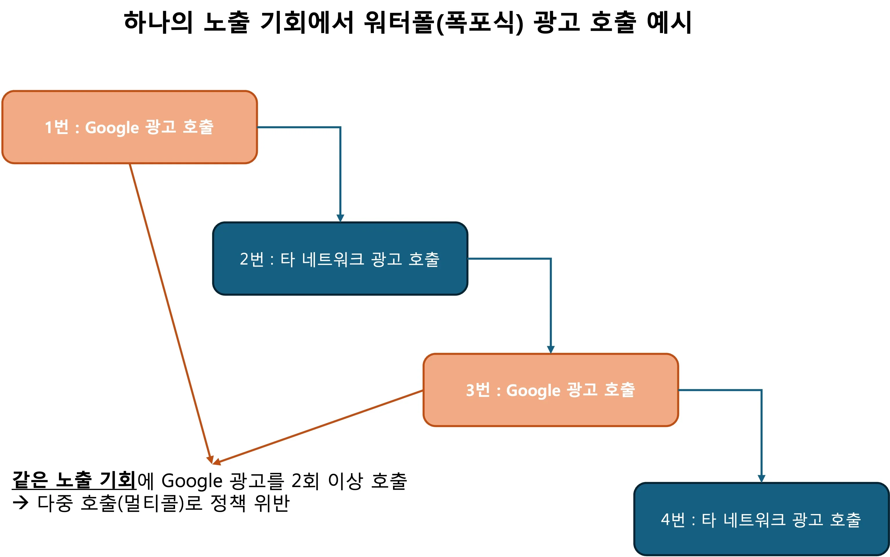
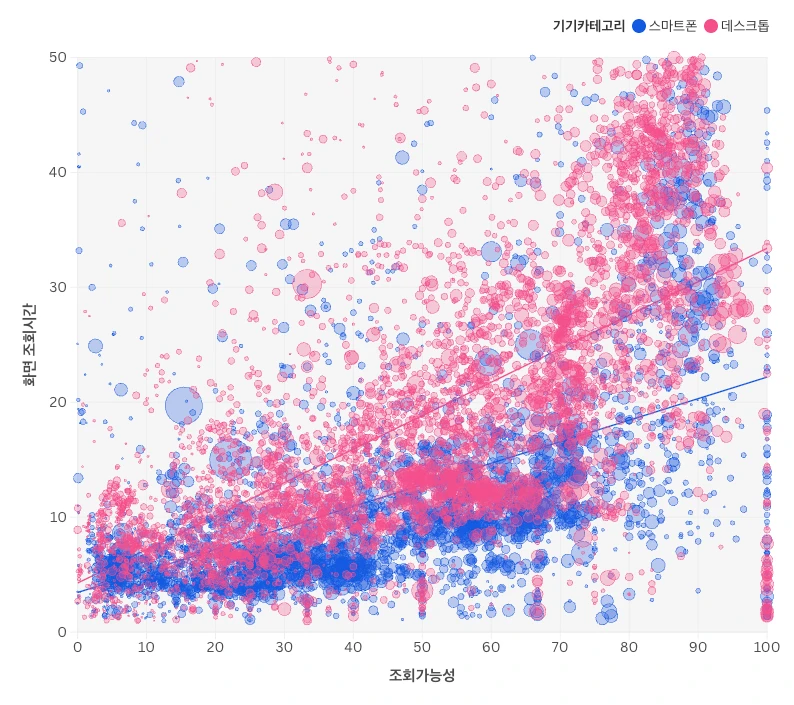
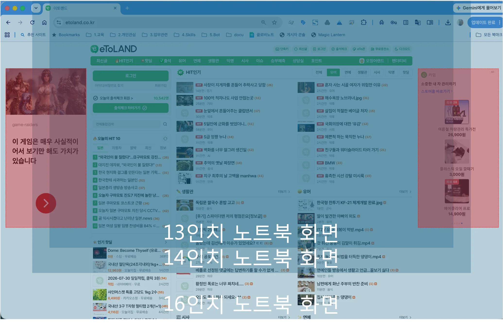

· Google 더 나은 광고 표준(2026년 5월 시행)
· 위반 유형 — 콘텐츠 가림과 클릭 민감도
· 앵커 vs 일반 배너 — 인벤토리 형식
· 밀도·빈도·쿨타임
· 다중 호출(멀티콜) — 무효 활동
· 뷰어빌리티 심층 분석
· 디바이스·화면 속성 고려
어떤 노하우든 출발점은 같습니다. "왜 안 좋아졌는가"를 먼저 파는 것. 우리가 "해봤더니 좋아졌던" 경험은, 사실 대부분 "왜 나빠졌는지"를 정확히 짚는 데서 시작됐습니다. 단가가 왜 떨어졌는지, 어떤 지면이 왜 성과가 안 나는지를 알아야 개선할 수 있으니까요.
이 글은 그렇게 쌓은 광고 수익화 노하우를 공개하는 첫 번째 편입니다. 한 번에 모든 것을 담기보다, 현장에서 특히 자주 마주치는 주제부터 하나씩 풀어가려 합니다. 이번 1탄에서는 최근의 정책 변화부터 인벤토리 형식·다중 호출·뷰어빌리티까지, 게시자가 당장 점검할 수 있는 것들을 다룹니다.
정책
Google '더 나은 광고 표준', 2026년 5월 공식 시행
먼저 큰 변화 하나부터 짚겠습니다. Google이 2026년 5월, 업데이트된 광고 표준을 공식적으로 시행했습니다. Coalition for Better Ads(더 나은 광고를 위한 연합)의 최신 소비자 리서치를 반영해 데스크톱·모바일 웹 광고 표준을 개정했고, Google은 이를 2026년 5월 15일부터 시행한다고 밝혔습니다.
그런데 여기서 게시자가 반드시 주목해야 할 대목이 있습니다. 이 시행 발표가 나온 것은 불과 한 달 전인 4월 11일이었습니다. 발표에서 시행까지 한 달 남짓. 정책 변화 치고는 대단히 촉박한 일정입니다.
원래 광고를 어디에, 어떻게 배치할지는 게시자의 자유 영역이었습니다. Google도 웬만해선 "그건 게시자 사정"이라며 개입하지 않았죠. 그런데 이번엔 그 자유를 거의 유예 없이 빠르게 좁혔습니다. 이는 두 가지를 의미합니다. 첫째, 사용자 경험을 해치는 광고가 그만큼 심각하게 누적됐다는 것. 둘째, 게시자에게 주어진 대응 시간이 매우 짧다는 것. 즉 "언젠가 고치지" 하고 미룰 여유가 없어졌습니다.
그래서 '더 나은 광고 표준'이 뭔가요?
쉽게 말하면 "사용자가 가장 싫어하는 광고 유형의 블랙리스트"입니다. Coalition for Better Ads는 광고주·매체사·기술기업이 함께 모인 국제 단체인데, 전 세계 수많은 사용자를 대상으로 "어떤 광고가 가장 거슬리는가"를 실제로 조사해 그 결과를 표준으로 정리합니다. Google은 이 연합의 회원사로서, 이 표준을 게시자 정책(Publisher Policies)에 반영해 운영합니다.
가장 확실한 방법은 Better Ads Standards 표준 페이지에서 금지된 광고 유형을 직접 보고 내 사이트와 대조하는 자가 점검입니다. 팝업, 대형 스티키 광고, 데스크톱 광고 밀도 50% 초과, 모바일 광고 밀도 30% 초과 등 유형별로 정리돼 있어 바로 비교할 수 있습니다.
참고로 Google도 광고 경험 보고서(Ad Experience Report)라는 진단 도구를 제공하지만, 인터페이스가 오래됐고 많은 사이트가 '미검토(Not reviewed)' 상태로 남아 실질적인 정보를 얻기 어려운 경우가 많습니다. 결과가 어떻든 핵심은 하나입니다 — 사이트가 30일 넘게 '위반' 판정을 받으면 Chrome 브라우저가 그 사이트의 광고를 자동으로 걸러낼 수 있습니다. 문제가 발견되면 조치 가이드를 참고하세요.
위반 유형
콘텐츠 가림 · 클릭 민감도 — 분리해서 봐야 하는 이유
표준이 지목하는 위반 유형은 여러 가지지만, 국내에서 특히 문제가 되는 것들을 짚어보겠습니다. 그리고 자주 뭉뚱그려 이야기되는 두 가지 — '콘텐츠를 가리는 광고'와 '클릭 민감도 조작' — 를 분리해서 정확히 이해하는 것이 중요합니다. 둘은 다른 문제이고, 결합됐을 때 비로소 최악이 되기 때문입니다.
유형 A — 팝업(Pop-up)과 팝언더(Pop-under)
팝업은 사이트에 들어가는 순간 콘텐츠 위로 튀어나와 화면을 가리는 광고입니다. 팝언더는 더 교묘합니다. 보고 있던 창 뒤에 몰래 광고 창을 하나 더 열어둬서, 브라우저를 닫았을 때 비로소 "내가 열지도 않은 광고 페이지"가 나타나죠. 둘 다 사용자가 원한 적 없는 광고를 강제로 보여주는, 오래된 대표 금지 유형입니다.
유형 B — 콘텐츠를 가리는 광고 (별개의 문제)
말 그대로 광고가 본문 콘텐츠를 물리적으로 덮어 가리는 경우입니다. 사용자가 글을 읽으려는데 광고가 그 위에 얹혀 시야를 막는 상황이죠. 이것은 "배치·레이아웃"의 문제입니다. 광고가 어디에 놓이느냐, 무엇을 가리느냐의 이슈입니다.
유형 C — 클릭 민감도 조작 (또 다른 별개의 문제)
이것은 배치가 아니라 "동작·인터랙션"의 문제입니다. 스크롤하려고 화면을 슬쩍 건드리기만 해도 광고 클릭으로 처리되도록, 클릭 감지 민감도를 인위적으로 높인 것입니다. 사용자는 분명 스크롤을 했을 뿐인데 광고 페이지로 튕겨 나가죠. 광고가 콘텐츠를 가리지 않더라도, 이 조작 하나만으로 사용자 경험은 크게 훼손됩니다.
둘이 결합되면 문제가 커진다
진짜 심각한 상황은 B와 C가 겹칠 때 벌어집니다. 광고가 콘텐츠를 가리는 위치에 있으면서(B) 동시에 클릭 민감도까지 높다면(C), 사용자는 글을 읽거나 스크롤하려다 원치 않는 광고를 반복적으로 클릭하게 됩니다. 가림 + 오클릭이 곱해지면서 오작동 빈도가 폭증하는 것이죠.
안타깝게도 이 오클릭을 수익 모델로 삼는 시장이 존재합니다. 국내에서는 주로 쿠팡 파트너스 등 CPS(Cost Per Sale, 판매당 과금) 유형의 제휴 캠페인이 대표적입니다. CPS는 사용자가 광고를 클릭한 뒤 일정 시간(예: 24시간) 안에 무언가를 구매하면, 그 구매액의 일부가 추천 수수료로 정산되는 구조입니다. 그 자리에서 바로 사지 않아도, 추천인 꼬리표가 붙어 있는 동안의 구매가 잡히죠. "오클릭이라도 일단 클릭만 시키면 확률적으로 수수료가 발생한다"는 계산이 서기 때문에, 클릭 민감도를 극단적으로 올리는 유인이 생깁니다.
이렇게 사용자 동의 없이 화면을 가로채 특정 쇼핑몰로 강제 이동시키는 방식은 국내에서 이른바 '쿠팡 납치광고'로 불리며 사회적 문제가 됐습니다. MBC 보도(2026년 6월)에 따르면, 이러한 납치광고 관리 부실 등을 이유로 대규모 과징금이 부과되기도 했습니다. 즉 이 문제는 게시자의 지면 품질을 넘어 법적·규제 리스크로까지 이어질 수 있는 사안입니다.
정리하면 — 가림(B)은 배치의 문제, 민감도(C)는 동작의 문제, 그리고 이 둘의 결합이 최악입니다. 내 사이트를 점검할 때도 이 둘을 따로따로 확인해야 정확한 진단이 나옵니다.
인벤토리 형식
앵커 광고 vs 일반 배너 — 단가를 가른 진짜 변수
이번엔 실제로 있었던 흥미로운 사례입니다. 스크롤이 없는 지면(한 화면에 모든 것이 들어오는 페이지)에 광고 두 개를 동시에 띄웠습니다. 하나는 화면 위쪽, 하나는 화면 아래쪽이었죠.
여기서 중요한 전제가 있습니다. 스크롤이 없기 때문에, 두 광고의 뷰어빌리티(가시성)와 체류 시간은 사실상 동일합니다. 사용자가 스크롤로 지나쳐 버릴 일이 없으니, 두 지면 모두 화면에 똑같이 계속 노출됩니다. 조건이 같은 것이죠.
차이는 딱 하나였습니다. 한 광고는 평범한 728×90 배너로 불렀고, 다른 광고는 하단 앵커(Anchor) 광고로 불렀습니다. 그런데 두 광고의 단가에 의미 있는 차이가 났습니다.
가시성도, 체류 시간도, 화면 내 위치의 이점도 비슷한데 왜 갈렸을까요? 우리가 주목한 변수는 Google이 인식하는 '인벤토리 형식(inventory format)'이었습니다. 같은 물리적 노출이라도, 지면을 '앵커'라는 형식으로 선언하면 Google과 수요처는 그것을 별도의(그리고 통상 더 가치 있는) 인벤토리 유형으로 취급합니다. 앵커는 자동 광고(Auto ads)가 제공하는 정식 오버레이 형식으로, 화면에 고정되는 특성 덕분에 일반적으로 프리미엄 지면으로 평가받습니다.
물론 이는 특정 지면에서 관찰된 사례이며, 정확한 차이는 매체·수요 상황에 따라 달라질 수 있습니다. 다만 "같은 자리, 같은 크기라도 인벤토리 형식 선언이 결과를 바꿀 수 있다"는 점은 지면 설계 시 반드시 고려할 가치가 있습니다.
노출 관리
광고는 몇 개가 적정한가 — 밀도·빈도·쿨타임
"광고를 많이 붙일수록 수익이 는다"는 생각은 실제 운영에서 자주 배신당합니다. 광고를 엄청나게 많이 붙인 사이트일수록 오히려 단가가 안 나오는 경우가 많죠. 왜 그럴까요? 밀도(density)와 빈도(frequency)가 항상 손잡고 움직이기 때문입니다.
밀도는 "한 화면에 광고가 얼마나 빽빽한가", 빈도는 "사용자가 광고를 얼마나 자주 보게 되는가"입니다. 이 둘은 사실 같은 현상의 앞뒷면입니다. 한 페이지에 광고가 10개면, 그 페이지를 한 번 보는 것만으로 이미 열 번의 노출 빈도가 발생하니까요.
문제는 사용자가 같은 광고 환경에 반복 노출될수록 각 노출의 가치가 뚝뚝 떨어진다는 데 있습니다. 보상형 광고 환경에서 관찰한 사례가 이를 잘 보여줍니다.
사용자가 위에서부터 순서대로 광고를 소비한다고 할 때, 첫 번째 광고의 가치를 100이라 하면 두 번째는 대략 30 수준으로 떨어지고, 그 뒤로도 계속 감소했습니다. (특정 환경의 관찰값으로, 매체·상품에 따라 달라질 수 있습니다.)
여기서 핵심은, 높은 단가를 얻는 구간이 대략 초반 5회 정도까지이고 그 뒤로는 급락한다는 것입니다. 그래서 우리는 중간에 짧은 쉬는 시간, 즉 쿨타임(딜레이)을 넣어봤습니다. 한 페이지에 20개를 몰아 보여주는 대신 5~10개만 보여주고 다음 페이지로 넘기면, 페이지가 새로 뜨는 짧은 공백이 생깁니다. 이 공백을 준 경우 단가가 반등했습니다(위 그래프 초록 선). 가파른 하락을 완만하게 바꾸는 것 — 이것이 밀도·빈도를 '제어'한다는 말의 실체입니다.
무효 활동
다중 호출(멀티콜) — Google이 '반복 호출'로 금지한 무효 활동
이번 주제는 게시자 대부분이 인지조차 못한 채 손해를 보고 있는 영역입니다. 바로 다중 호출(멀티콜)입니다. 다중 호출은 Google이 정책에서 금지하는 더 넓은 개념인 '반복 호출'의 일부에 해당합니다. 이 글에서는 이후 '다중 호출'이라는 표현으로 설명하겠습니다.
먼저 워터폴(waterfall) 개념부터. 광고를 팔 때 여러 수요처를 위에서부터 순서대로 부르는 방식을 워터폴이라고 합니다. 1순위가 광고를 못 채우면 2순위, 그다음 3순위… 이런 식으로 폭포처럼 내려가죠. 문제는 이 순서 안에 Google 광고를 두 번 이상 끼워 넣을 때 생깁니다.

위 그림처럼 1번도 Google, 3번도 Google이라면 — 하나의 노출 기회에 대해 Google 광고를 2회 호출한 다중 호출입니다. Google은 이런 행위를 명확히 금지합니다. Ad Manager 파트너 가이드라인은 이를 포함하는 개념을 공식적으로 '반복 호출'이라 부르며, '무효 활동(invalid activity)'의 한 유형으로 규정합니다(가이드라인 2.8 무효 활동). 요지는 "광고 입찰을 방해·남용하거나 부당한 이익을 얻으려는 목적으로 Google 광고를 반복 호출해서는 안 된다"는 것입니다.
① 무효 활동 판정 리스크: 정책 위반으로 간주되어 인벤토리·사이트 전반의 품질 평가가 저하될 수 있습니다.
② 보이지 않는 유실: 워터폴에서 앞 단계가 "광고 없음"으로 넘긴 요청을 뒤 단계가 온전히 받아주지 못해, 상당 비율(경험상 10~15% 수준)이 그냥 사라질 수 있습니다.
더 안타까운 것은 국내 대형 웹 게시자의 상당수가 인벤토리를 여러 단계의 워터폴로 운영하면서, 그 안에서 Google 광고를 2회 이상 호출하고 있다는 점입니다. 그리고 이로 인한 인벤토리·사이트 저품질 문제를 거의 인지하지 못한 채 방치하고 있습니다. "왜 단가가 안 나오지?", "왜 물량이 부족하지?"의 원인이 사실은 자신들의 다중 호출 구조에 있는데도 말이죠. 국내 트래픽 규모에서 Google 광고 물량이 마르는 일은 드뭅니다. 대부분은 구조의 문제입니다.
다중 호출은 흔히 쓰이지만 눈에 잘 띄지 않고, 담당자가 의지를 갖고 구조적으로 걷어내야만 해결됩니다. 지금 우리 사이트의 워터폴에 Google이 몇 번 등장하는지, 반드시 점검해 보시기 바랍니다.
측정
좋은 지면인데 단가가 안 나온다면 — 뷰어빌리티 심층 분석
"내가 봐도 이건 좋은 지면인데 단가가 안 나온다." 게시자에게 가장 자주 듣는 하소연입니다. 그 답은 상당수의 경우 뷰어빌리티(Viewability, 가시성)에 있습니다.
먼저 공식 기준 — Active View의 '1초'
뷰어빌리티는 "광고가 사용자에게 실제로 보였는가"입니다. 페이지에 로드된 것과 눈에 실제로 들어온 것은 다르죠. 이 "실제로 보임"을 세는 국제 표준(MRC·IAB)을 Google의 액티브 뷰(Active View)가 따르는데, 기준은 다음과 같습니다.
- 디스플레이(배너) 광고 — 면적의 50% 이상이 1초 이상 보이면 '유효 노출(viewable impression)'로 인정.
- 동영상 광고 — 50% 이상이 2초 이상.
- 아주 큰 광고(약 242,500픽셀 이상) — 30% 이상이 1초.
이 기준을 못 채우는 지면은 아무리 좋아 보여도 단가가 나오지 않습니다. 측정 원리는 Active View 측정 방식 문서를 참고하세요.
그런데 왜 우리는 '3초(그리고 4초)'를 강조할까요?
공식 유효 노출 기준은 분명 1초입니다. 하지만 실무에서 우리가 주목하는 숫자는 조회 시간 3~4초입니다. 이유가 있습니다. 실제 데이터에서 광고가 화면에 충분히 오래 보일수록(조회가능성·조회시간이 높을수록) 사용자가 실제로 '클릭'할 가능성이 뚜렷하게 올라가는, 인과에 가까운 상관성이 확인됐기 때문입니다.
더 중요한 것은 이 임계 시간이 기기(디바이스)마다 다르다는 점입니다. 아래 분포를 보면 명확합니다.
- 스마트폰 — 화면 조회 시간이 약 3초 이상일 때부터 클릭 가능성이 뚜렷하게 높아집니다.
- 데스크톱 — 화면 조회 시간이 약 4초 이상이어야 클릭 가능성이 높아집니다. (화면이 크고 볼거리가 많아, 광고에 시선이 머물기까지 조금 더 걸리는 것으로 해석됩니다.)
정리하면 — 1초는 "봤다(노출)"의 기준이고, 기기별 3~4초는 "클릭·전환으로 이어지는" 실질 기준에 가깝습니다. 광고를 단순 노출이 아니라 성과(클릭)까지 끌고 가려면, 지면이 모바일은 최소 3초, 데스크톱은 최소 4초는 사용자 눈앞에 머물 수 있도록 설계해야 한다는 뜻입니다.

케이스 — 헤더 아래 배너가 1초를 못 버틸 때
상단에 320×100 배너를 헤더(맨 위 메뉴 영역) 바로 아래 넣었다고 해봅시다. 사용자가 스크롤을 시작하는 순간 이 배너는 1초도 못 버티고 사라집니다. 유효 노출조차 안 잡히니 단가가 나올 리 없죠.
사실 헤더 아래, 즉 본문(body) 영역 최상단은 얼핏 생각하면 가장 먼저 보이니 뷰어빌리티가 높을 것 같습니다. 하지만 실상은 정반대인 경우가 많고, 특히 콘텐츠 페이지(기사·게시글)에서 더 심합니다. 이유가 있습니다. 사용자는 이미 제목을 보고 그 콘텐츠를 선택해 들어온 상태라, 페이지가 열리면 본문 제목이 로딩되는 순간 곧바로 스크롤을 내리기 시작합니다. 그 결과 제목보다 위에 놓인 광고는 화면에 채 그려지기도 전에 뷰포트 밖으로 밀려납니다. "맨 위 = 잘 보이는 자리"라는 직관이 콘텐츠 페이지에서는 통하지 않는 것이죠.
해결책은 광고를 헤더 영역 '안'에 편입시키고, 여기에 스크롤을 하더라도 화면에 계속 노출되도록 스티키(sticky) 옵션을 적용하거나 상단 앵커(anchor) 광고로 구현하는 것입니다. 이렇게 하면 광고 영역이 본문과 분리돼 "콘텐츠를 가리는 광고"로 판정되지 않으면서도, 사용자가 스크롤을 내려도 상단에 지속적으로 남아 뷰어빌리티가 확보됩니다. 정책 리스크는 피하면서 노출 시간을 확보하는 방법입니다.
타겟팅
디바이스·화면 속성을 고려한 광고 정의
마지막 주제입니다. 같은 광고라도 사용자의 디바이스와 화면 속성에 따라 실제로 보이는 정도가 완전히 달라집니다. 그래서 광고는 "그냥 넣는" 것이 아니라, 디바이스·화면 폭 같은 속성을 고려해 '정의'해야 합니다.
대표적인 예가 콘텐츠 좌우의 날개 배너(사이드 스카이스크래퍼)입니다. 아래 이미지는 한 커뮤니티 사이트의 좌우 날개 배너 위에, 13인치·14인치·16인치 노트북의 화면 폭을 겹쳐 본 것입니다.

이미지에서 좌우 빨간 박스로 표시된 날개 배너는 300×600 사이즈입니다. 문제는 여기서 발생합니다. 13인치 화면에서는 이 300×600 광고의 절반(50%)도 화면 안에 들어오지 못합니다. 앞서 뷰어빌리티 섹션에서 본 것처럼 유효 노출의 최소 조건이 "면적의 50% 이상이 1초 이상"인데, 애초에 50%가 노출될 수 없는 지면이라면 하늘이 무너져도 Active View는 성립하지 않습니다. 체류 시간이 길든 짧든 무관하게요.
그래서 우리가 고객사에 제안한 해결책은 가로 폭을 고려해 사이즈를 유연하게 호출하는 것이었습니다. 좁은 화면에서는 300×600 대신 폭이 좁은 120×600 또는 160×600을 호출해, 어떤 화면에서도 50% 노출 조건을 채울 수 있도록 지면을 재설계한 것이죠.
여기서 한 단계 더 들어갔습니다. 체류 시간이 짧은 리스트 페이지(게시글 목록처럼 사용자가 빠르게 훑고 지나가는 화면)에서는 300×600을 호출 후보에서 완전히 제외하고 정확히 120×600과 160×600 두 사이즈만 호출하도록 했습니다. 이유는 소재 무게(로딩 속도)에 있습니다. 300×600처럼 큰 사이즈는 광고 소재가 상대적으로 무거워 로딩이 느립니다. 체류가 짧은 페이지에서는 이 로딩 지연이 곧 노출 실패로 이어지죠 — 광고가 다 뜨기도 전에 사용자가 화면을 떠나니까요. 그래서 더 가벼운 사이즈만 호출해 광고 로딩 시간을 아끼고, 광고가 그만큼 빨리 화면에 떠서 결과적으로 뷰어빌리티를 확보하도록 한 것입니다. "보일 사이즈만, 그리고 빨리 뜰 수 있는 사이즈만" 부르도록 지면 유형별 호출 규칙을 세분화한 셈입니다.
| 지표 | 적용 전 | → | 적용 후 |
|---|---|---|---|
| 조회가능성(뷰어빌리티) | 66.4% | → | 87.6% |
| 게재율 | 35.6% | → | 42.7% |
| eCPM | $0.17 | → | $0.24 |
이런 조정들을 적용한 후, 조회가능성이 66.4%에서 87.6%로 뛰었고 게재율과 eCPM도 함께 올랐습니다. 단순히 사이즈 하나를 바꾼 것이 아니라, 사용자의 화면 폭·체류 특성·소재 무게까지 섬세하게 고려해 지면을 재설계한 접근이 만든 결과로 모든 핵심 지표가 큰 폭으로 상승했습니다. 핵심 메시지는 분명합니다 — "보이지 않을 지면은 애초에 정의하지 말고, 보일 조건에서만 정확히 호출하라." (수치는 해당 고객사의 사례로, 환경에 따라 달라질 수 있습니다.)
마치며
오랜만에 장문의 글을 작성하다 보니 게시글 작성에 생각보다 시간이 많이 걸리네요. 그렇다고 아무렇게나 글을 작성할 수도 없다 보니 신중할 수밖에 없었던 것 같습니다.
이번 노하우에서는 정책 변화(더 나은 광고 표준)부터 인벤토리 형식, 다중 호출, 뷰어빌리티까지 짚었습니다. 공통된 교훈은 하나입니다 — "많이 붙이는 것"이 아니라 "정확하게 정의하고, 방해하지 않는 것"이 수익을 지킨다. 이것만 잘 준수한다면 안정적인 수익의 뼈대가 될 것이라 확신합니다.
또 기회가 되면 구글 수익화 관련 정책 분석과 각 정책별 구체적인 사례를 비롯해, 현장에서 검증한 노하우를 공개하겠습니다. 궁금한 점이나 직접 적용해보고 싶은 부분이 있다면 help@silver-smiths.com으로 문의해 주세요.
자주 묻는 질문 (FAQ)
Q1. Google의 업데이트된 광고 표준은 언제부터 시행되나요?
Coalition for Better Ads의 개정 표준을 반영해 2026년 5월 15일부터 시행됩니다. 발표는 약 한 달 전인 4월 11일에 이루어져, 게시자의 대응 기간이 매우 짧았습니다.
Q2. 내 사이트의 광고 표준 준수 여부는 어떻게 확인하나요?
가장 확실한 방법은 Coalition for Better Ads의 표준 페이지에서 금지 광고 유형을 직접 확인하고 내 사이트와 대조하는 자가 점검입니다. Google의 광고 경험 보고서(Ad Experience Report)도 있지만 인터페이스가 오래됐고 많은 사이트가 '미검토'로 표시됩니다. 사이트가 30일 이상 '위반'이면 Chrome이 광고를 필터링할 수 있습니다.
Q3. '콘텐츠를 가리는 광고'와 '클릭 민감도 조작'은 같은 문제인가요?
다릅니다. 콘텐츠를 가리는 광고는 배치·레이아웃의 문제이고, 클릭 민감도 조작은 스크롤 등 정상 조작을 클릭으로 처리하는 동작의 문제입니다. 둘이 결합되면 오클릭이 폭증해 문제가 커집니다.
Q4. 앵커 광고와 일반 배너는 왜 단가가 다른가요?
스크롤이 없어 가시성·체류 시간이 같은 지면에서도 단가 차이가 났는데, 핵심 변수는 Google이 인식하는 '인벤토리 형식'이었습니다. 앵커로 선언하면 별도의(통상 더 가치 있는) 인벤토리 유형으로 취급됩니다.
Q5. 다중 호출(멀티콜)이 무엇이고 왜 하면 안 되나요?
하나의 노출 기회에 대해 Google 광고를 2회 이상 호출하는 것입니다. Google은 이를 포함하는 개념을 '반복 호출'이라 부르며 '무효 활동'으로 규정해 금지합니다. 인벤토리 품질 저하와 요청 유실을 유발할 수 있습니다.
Q6. 뷰어빌리티의 '1초'와 '3~4초'는 무엇이 다른가요?
1초는 디스플레이 광고의 유효 노출 국제 표준입니다. 3~4초는 클릭 가능성이 높아지는 조회 시간으로, 기기별로 다릅니다. 관찰상 스마트폰은 약 3초 이상, 데스크톱은 약 4초 이상에서 클릭 가능성이 뚜렷하게 올라갑니다.
참고 자료 (원문 출처)
본문에 인용된 정책·표준의 원문입니다. 최신 기준은 아래 링크에서 직접 확인하시기 바랍니다.
- Coalition for Better Ads — 공식 사이트
- Better Ads Standards — 금지 광고 유형(자가 점검용)
- Google 게시자 정책 — Better Ads Standards
- Google 광고 경험 보고서(Ad Experience Report) 소개
- 광고 경험 문제 해결 가이드(AdSense)
- Better Ads Standards 개요(Ad Manager)
- 앵커 광고 소개(AdSense)
- 자동 광고(Auto ads) 소개
- Ad Manager 파트너 가이드라인 — 반복 호출·무효 활동(2.8)
- MBC 보도 — 쿠팡 '납치광고' 관련 과징금(2026.6)
- 뷰어빌리티와 Active View 개요(Ad Manager)
- Active View 측정 방식(Ad Manager)
- IAB — Interactive Advertising Bureau
Silversmith는 20년 이상의 매체·수익화 운영 경험을 바탕으로 게시자의 지면 구조를 진단하고, 정책 리스크와 단가 손실 지점을 함께 찾아 개선합니다. Ad Monetization 컨설팅에서 더 알아보거나 문의하기로 상담을 신청하세요.
※ 본 글의 정책 시행 시점·광고 표준 기준·수익/단가 관련 수치는 게시 시점의 공개 정보와 운영 경험을 바탕으로 정리한 것으로, 실제 값은 매체·트래픽 특성과 정책 개정에 따라 달라질 수 있습니다. 링크된 원문(Google·Coalition for Better Ads·IAB/MRC 등)에서 최신 기준을 확인하시기 바랍니다.